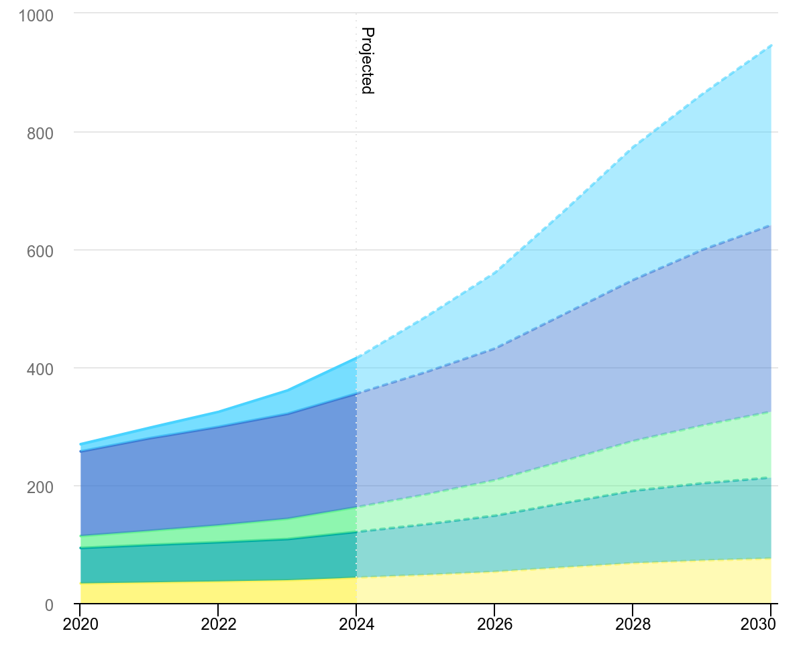

Report
AI Report 2026
A technical report on the 2020-2026 AI transition, comparing large general-purpose models with lightweight specialized models.
Open reportI study and build around AI agents, smart buildings, digital twins, data centers, and energy infrastructure. This site is my public index of reports, experiments, and reusable thinking.
Selected outputs that show where my interests are moving: from AI model capability toward infrastructure, operations, and practical automation.
A technical report on the 2020-2026 AI transition, comparing large general-purpose models with lightweight specialized models.
Open report
Notes on why AI competition is becoming a question of compute, capital expenditure, power, cooling, and operational efficiency.
Read section
A Python workflow for collecting daily technology signals and turning them into publishable content ideas.
View repositoryMy current question is simple: how does AI become useful inside real operating environments, not only demos? I care about the layer where models meet buildings, energy systems, workflows, and domain experts.
Code, static reports, and experiments live under the JCURVEs account.
github.com/JCURVEsShort-form technology signals and builder notes are posted as @jokerburg.builder.
Open ThreadsLonger Korean writing and archive-style posts live on my Tistory blog.
Open blog